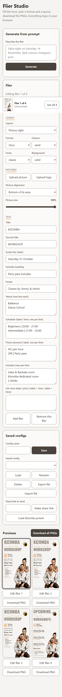
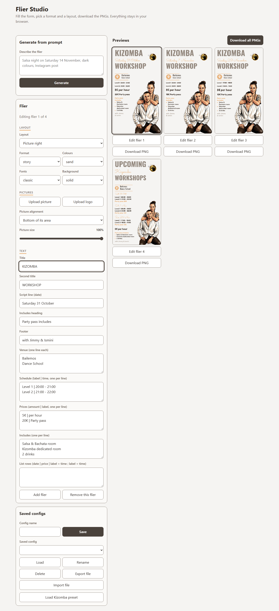
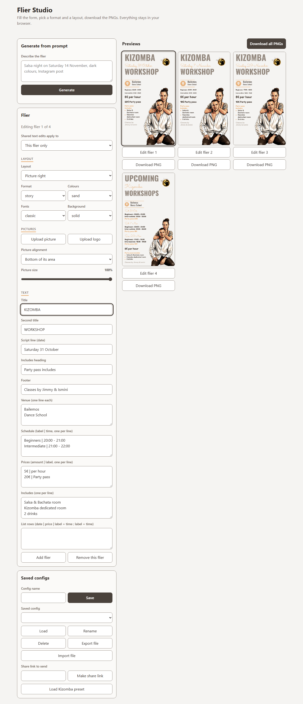
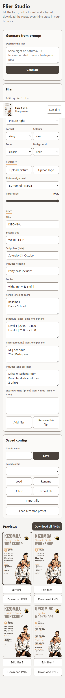
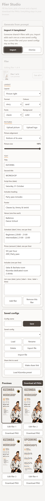
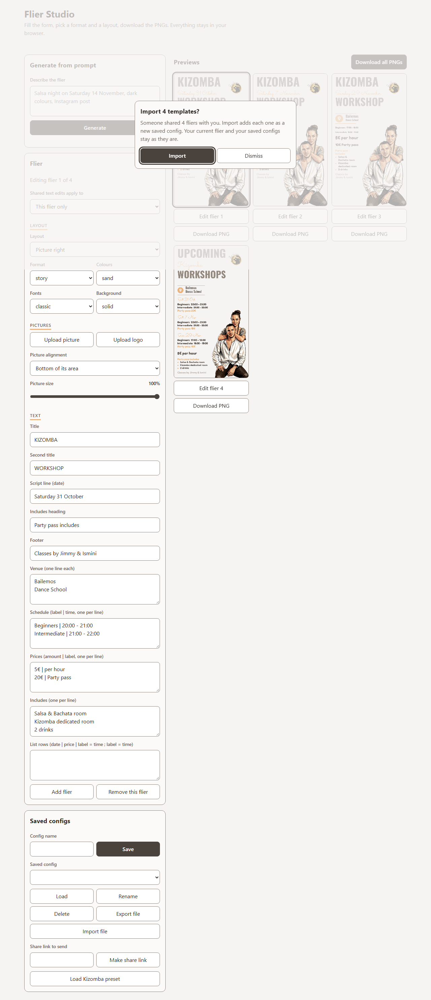

AC-10 scope toggle ("Shared text edits apply to") and the Share row
360x640


1280x800


Before = build 353d5ed (HEAD before FLIER-2). After = the FLIER-2 build. Same route, same fresh storage, same viewport, full-page crop from the page top; captured by capture.spec.ts, measured in result.json.






